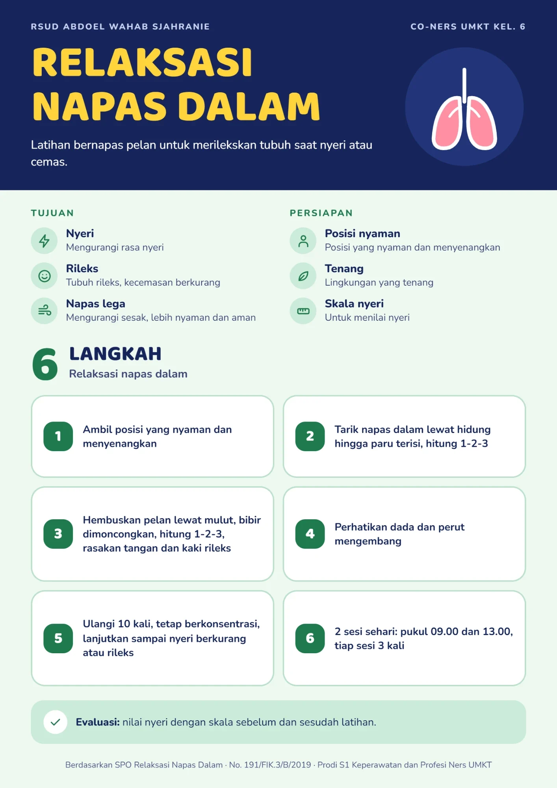
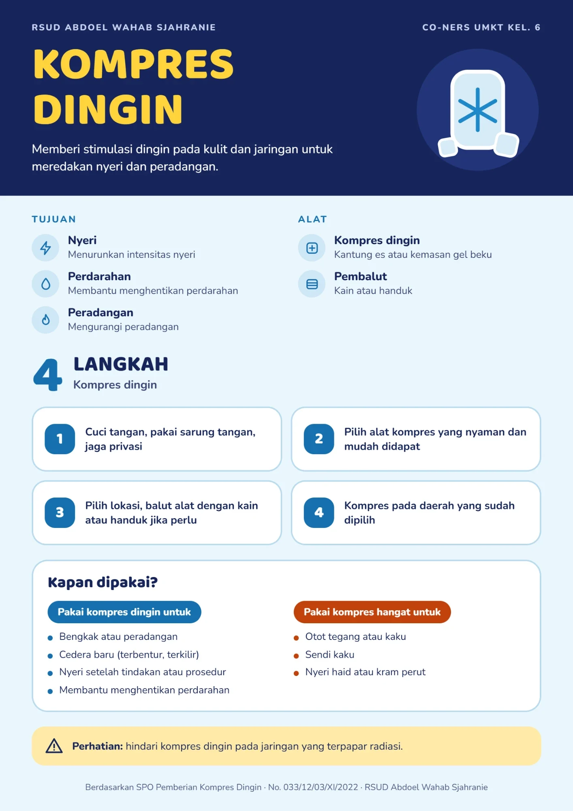
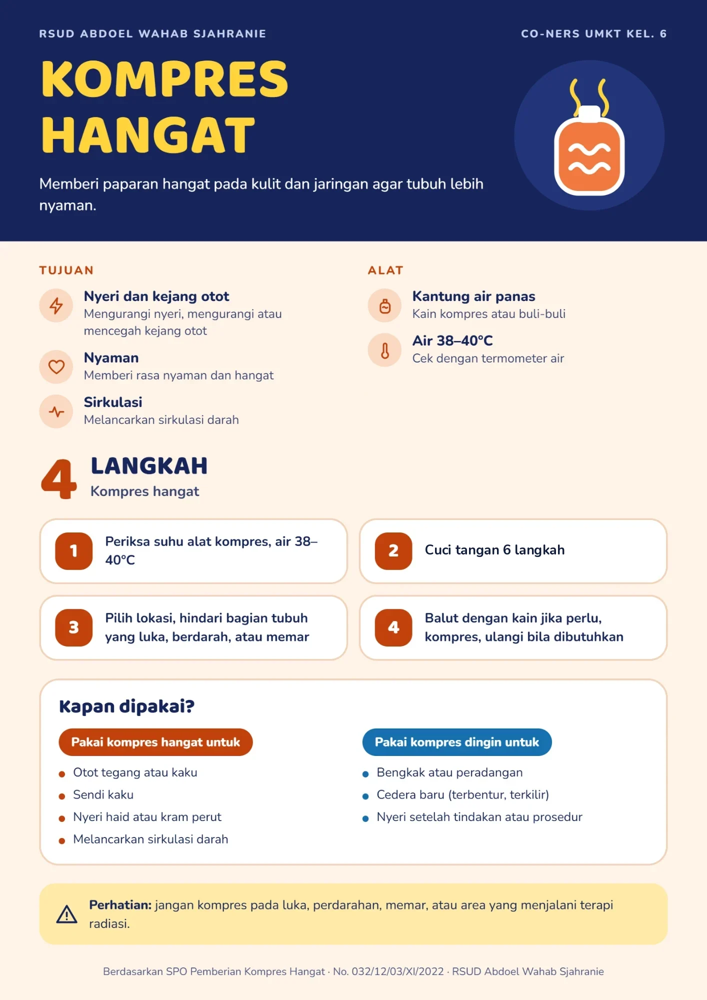

Relaksasi napas dalam
Latihan bernapas pelan untuk merilekskan tubuh saat nyeri atau cemas.
Tujuan
- Nyeri: mengurangi rasa nyeri
- Rileks: tubuh rileks, kecemasan berkurang
- Napas lega: mengurangi sesak, lebih nyaman dan aman
Persiapan
- Posisi nyaman: posisi yang nyaman dan menyenangkan
- Tenang: lingkungan yang tenang
- Skala nyeri: untuk menilai nyeri
Langkah
Ambil posisi yang nyaman dan menyenangkan.
Tarik napas dalam lewat hidung hingga paru terisi, hitung 1-2-3.
Hembuskan pelan lewat mulut dengan bibir dimoncongkan, hitung 1-2-3, rasakan tangan dan kaki rileks.
Perhatikan dada dan perut mengembang.
Ulangi 10 kali, tetap berkonsentrasi, lanjutkan sampai nyeri berkurang atau rileks.
Lakukan 2 sesi sehari, pukul 09.00 dan 13.00, tiap sesi 3 kali.
Berdasarkan SPO Relaksasi Napas Dalam No. 191/FIK.3/B/2019, Prodi S1 Keperawatan dan Profesi Ners UMKT. Poster: Co-Ners UMKT Kelompok 6.


Kompres dingin
Memberi stimulasi dingin pada kulit dan jaringan untuk meredakan nyeri dan peradangan.
Tujuan
- Nyeri: menurunkan intensitas nyeri
- Perdarahan: membantu menghentikan perdarahan
- Peradangan: mengurangi peradangan
Alat
- Kompres dingin: kantung es atau kemasan gel beku
- Pembalut: kain atau handuk
Langkah
Cuci tangan, pakai sarung tangan, jaga privasi.
Pilih alat kompres yang nyaman dan mudah didapat.
Pilih lokasi, balut alat dengan kain atau handuk jika perlu.
Kompres pada daerah yang sudah dipilih.
Kapan dipakai?
- Bengkak atau peradangan
- Cedera baru (terbentur, terkilir)
- Nyeri setelah tindakan atau prosedur
- Membantu menghentikan perdarahan
- Otot tegang atau kaku
- Sendi kaku
- Nyeri haid atau kram perut
Berdasarkan SPO Pemberian Kompres Dingin No. 033/12/03/XI/2022, RSUD Abdoel Wahab Sjahranie. Poster: Co-Ners UMKT Kelompok 6.


Kompres hangat
Memberi paparan hangat pada kulit dan jaringan agar tubuh lebih nyaman.
Tujuan
- Nyeri dan kejang otot: mengurangi nyeri, mengurangi atau mencegah kejang otot
- Nyaman: memberi rasa nyaman dan hangat
- Sirkulasi: melancarkan sirkulasi darah
Alat
- Kantung air panas: kain kompres atau buli-buli
- Air 38–40°C: cek dengan termometer air
- Sarung tangan: bersih, dipakai petugas
Langkah
Periksa suhu alat kompres, air 38–40°C.
Cuci tangan 6 langkah (lihat caranya), pakai sarung tangan.
Pilih lokasi, hindari bagian tubuh yang luka, berdarah, atau memar.
Balut dengan kain jika perlu, kompres, ulangi bila dibutuhkan.
Kapan dipakai?
- Bengkak atau peradangan
- Cedera baru (terbentur, terkilir)
- Nyeri setelah tindakan atau prosedur
- Otot tegang atau kaku
- Sendi kaku
- Nyeri haid atau kram perut
- Melancarkan sirkulasi darah
Berdasarkan SPO Pemberian Kompres Hangat No. 032/12/03/XI/2022, RSUD Abdoel Wahab Sjahranie. Poster: Co-Ners UMKT Kelompok 6.
